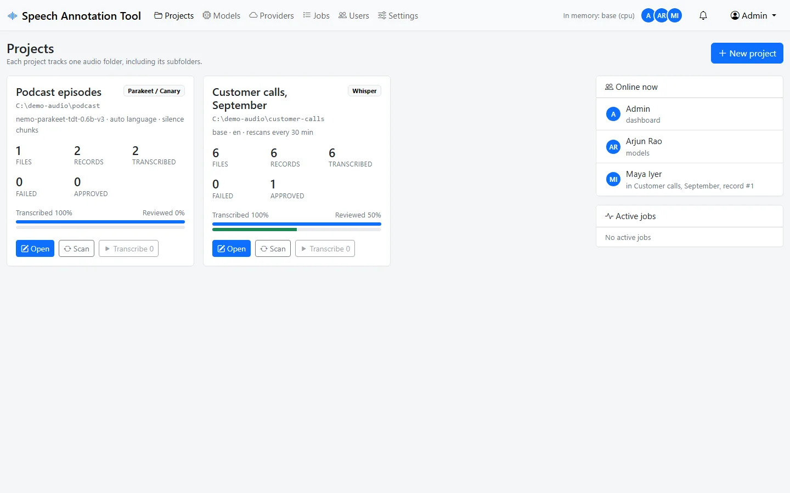
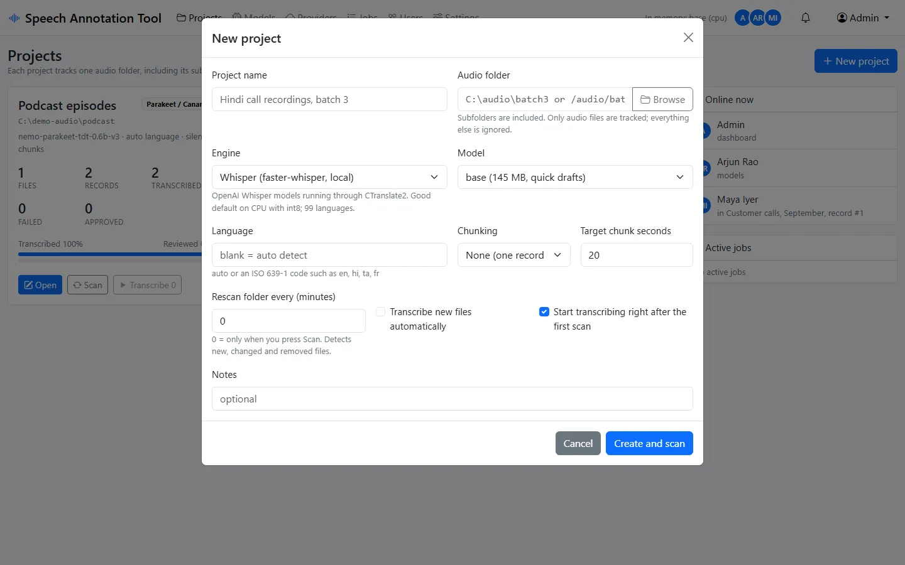
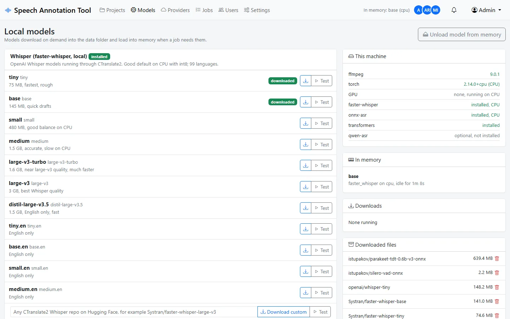
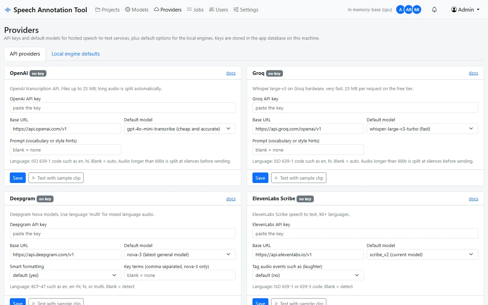
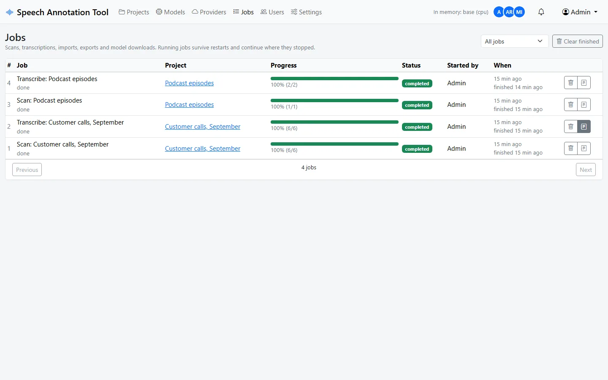
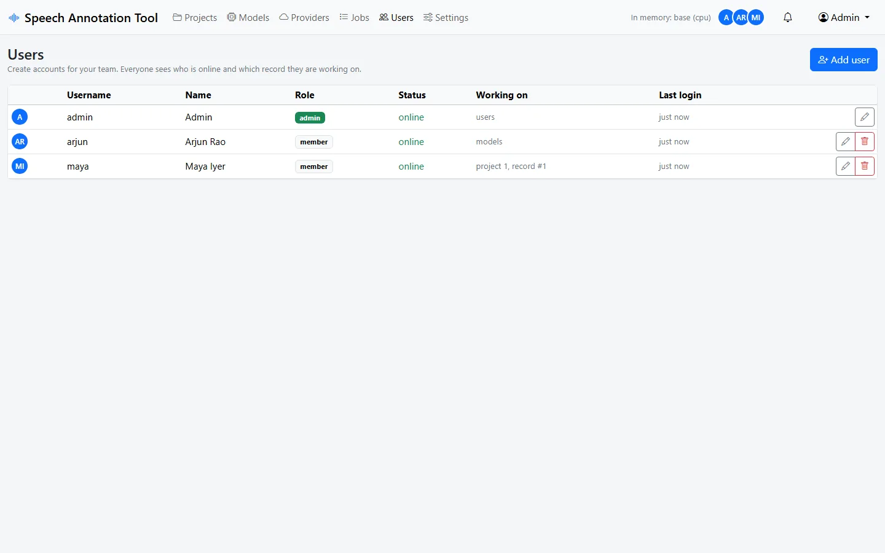

Speech Annotation Tool
Project Overview
The Speech Annotation Tool turns a folder of audio into a reviewed speech dataset. You point it at a folder, pick a speech recognition engine, and it scans the folder, cuts long recordings into short clips, transcribes them in the background and puts the result in front of your team to correct. When the review is done you export CSV, Excel, JSON Lines or a Hugging Face style audio folder and train on it.

It runs on your own machine. The engine can be a local model such as Whisper, NVIDIA Parakeet or AI4Bharat IndicConformer, downloaded from inside the app, or a hosted API such as Deepgram, ElevenLabs, Sarvam, OpenAI, Gemini or OpenRouter with a key you paste in. Nothing ships pre-installed and nothing is hard-coded; the only things in the environment file are the port, the data folder and the first admin login. Everything else is set in the browser.
Why I Built This
The first two versions were a correction table for Whisper output: load an Excel sheet and a folder of chunks, fix the text, download a CSV. It did that job, but every real dataset project ran into the same walls. The audio was never one flat folder. The model I wanted was not Whisper, or it was Whisper but the API version because the laptop was too slow. The job died halfway through a weekend run and I had no idea which files were done. Two people edited the same sheet and one of them lost their work.
Version 3 is a rewrite around those problems. Folders are tracked, not loaded. Engines are plug-ins, and the list covers the open models people ask for in 2026 as well as the hosted ones. Every record is its own checkpoint so a job can be paused, stopped, resumed or killed and picked up where it was. And there are accounts, presence and edit claims so a small team can work in it at the same time without stepping on each other.
What changed in 3.0
- Projects track a folder recursively. A scan finds only audio files, and later scans (manual or on a timer) notice new, changed and removed files without losing any review work.
- Long recordings are split at silences close to a target length, so each record is a clean short clip. Fixed windows and no chunking are also there.
- Five local engine families: faster-whisper, onnx-asr (Parakeet TDT v2 and v3, Canary), Hugging Face transformers, IndicConformer and Qwen3-ASR. Models download on demand with progress; one model sits in memory and is unloaded when idle.
- Ten hosted providers: OpenAI, Groq, Deepgram, ElevenLabs, Sarvam, AssemblyAI, Google Gemini, Mistral, OpenRouter and any OpenAI compatible server. Length limits such as Sarvam's 30 seconds are handled by cutting at silences before the call.
- Jobs with pause, resume and stop, per-record checkpoints, crash recovery on restart, logs and in-app notifications.
- Accounts, online presence down to the record someone has open, edit claims, version checks on save and a per-record edit history.
- Import from CSV, TSV, XLSX, JSON and JSONL, including the old version's own CSV. Export to CSV, XLSX, JSONL or an audio folder with
metadata.csv. - SQLite instead of CSV files, waitress instead of the Flask dev server, Bootstrap served locally so it works offline, a Conda environment that includes ffmpeg, and a Docker image with a GPU override.
Key Features
- Folder in, dataset out. Subfolders included, non-audio files ignored, 100,000 files is fine because the scan streams and every list in the app is paged.
- Change detection. Size and modification time are compared on every scan. Changed files can be re-cut, missing files keep their records and come back when the file returns.
- Engine choice per project. Switch between a local model and an API without touching existing text. Every engine has a "test with sample clip" button.
- Review desk. Player with speed control, machine text, editable corrected text, notes, approve and reject, keyboard shortcuts (Ctrl+Enter to save and move on, Alt+A to approve), history per record and bulk actions.
- Jobs you can trust. The record is the unit of work. Workers claim one atomically, write it back on its own, and a job that was running when the process died is queued again on the next start.
- Team aware. Avatars show who is online, rows show who is editing what, and a save that would overwrite someone else's change is refused instead of applied.
- Runs on a laptop CPU. int8 Whisper and Parakeet on the CPU by default; a GPU is used only when its libraries actually load, with a fallback to the CPU mid-job if a call fails.
Screenshots
Projects overview

Creating a project

Local models

Hosted providers

Jobs and users


How It Works
Scanning
- The folder is walked with
os.scandiron an explicit stack, yielding one file at a time. Hidden folders and things like$RECYCLE.BINare skipped; files are matched by extension. - Each path is compared with the
filestable. New files are inserted in batches of 500, changed sizes or times flag the row, paths that did not show up are marked missing. - New files are prepared: ffprobe reads the duration, and either one record points at the original file or ffmpeg cuts 16 kHz mono WAV segments into the data folder and one record is created per segment.
Chunking at silences
ffmpeg's silencedetect filter lists every quiet stretch. The planner then walks through the file
and, for each piece, looks for a silence inside a window around the target length, scoring closeness to
the target and the length of the silence. If there is no silence in the window it cuts hard at the target.
Files shorter than 1.5 times the target are not cut at all.
Transcribing
- A transcribe job counts the pending records and starts one worker for a local engine or several for a hosted one.
- Each worker claims the next pending record with a single
UPDATE ... RETURNING, so two workers can never get the same one. - The audio is converted to 16 kHz mono WAV if it is not already, cut into pieces if the engine has a length limit, and sent to the engine. The text and detected language are written back and the job counter moves.
- Pause and stop are flags checked between records. A configuration error that would fail every record, such as a missing API key, stops the job after the first attempt and leaves the record pending.
Working together
Every page polls one status endpoint every two seconds. The call carries which page, project and record the user is on, and returns active jobs, unread notifications, who is online and the counters of the open project. Focusing a row claims it; other browsers see the claim on the next poll and mark the row read-only. Saves carry the record version they started from and are refused with a 409 when it moved.
Tech Stack
Server
Audio and local engines
Hosted providers
Frontend and delivery
My Contribution
I designed and built all three versions on my own.
- Designed the data model (projects, files, records, jobs) and the SQLite layer with one write lock and per-thread connections
- Wrote the streaming folder scanner with change detection and the silence based chunk planner on top of ffmpeg
- Built the engine registry and the fifteen engine integrations, including the auto-split for length-limited providers and the GPU probe with CPU fallback
- Built the job runner: atomic claims, pause and resume, crash recovery, scheduled rescans, idle model unload and cache trimming
- Built the review interface, presence, edit claims, version checks and history
- Wrote the import and export paths, the Conda and Docker packaging, the test suite and the documentation
Challenges and Learnings
A GPU that reports itself but cannot work.
CTranslate2 saw the laptop's NVIDIA card and happily reported a CUDA device, but the CPU build of PyTorch
does not ship cuBLAS. The first record failed with a missing DLL and the second call hung inside native
code, taking the job with it. The fix is a probe that imports torch and then tries to load cuBLAS by name
before the GPU is ever offered to an engine, plus a fallback that marks the engine CPU-only for the session
if a GPU call still fails. "Works on any machine" mostly means "does not trust what the machine says".
Timestamps that SQLite can compare.
Scheduled rescans and stale claim clean-up are plain SQL comparisons against datetime('now').
Python's ISO format with a T and a timezone suffix sorts after SQLite's space-separated form
on the same date, so the comparisons were silently wrong. Every timestamp in the app is now written in
SQLite's own shape, in UTC, and the browser converts for display.
Where a hosted provider's limit belongs.
Sarvam's synchronous endpoint takes 30 seconds of audio, OpenAI 25 MB, Gemini 20 MB inline. Putting these
rules in the chunk settings would tie the dataset shape to the provider. Instead each engine declares a
maximum duration and the shared transcribe path cuts the clip at silences, transcribes the pieces and joins
the text. The project's chunking stays about the dataset, the split stays about the API.
The table that did not refresh.
The browser test that created a project and waited for its rows timed out, because the page loaded before
the scan had created any records and nothing told it to look again. A human would have pressed F5 and never
reported it. The status poll now carries the record count and the number of active jobs, and the table
reloads when either changes and nothing is being edited.
Two servers on one port.
On Windows a second copy of the app can bind a port that is already in use, and for twenty minutes I was
testing an old build. The lesson went into the troubleshooting guide and into a habit of checking
Get-CimInstance Win32_Process before believing a log line.
Core Logic: How the Code Works
Four pieces carry most of the design. They are shown as they are in the repository, with a few lines cut for length.
Claiming a record
One statement takes the next pending record and marks it as processing. Because SQLite runs the subquery and the update in the same transaction, parallel workers, whether threads in one job or a job and a user pressing "re-transcribe", cannot both get it. The test suite runs six threads against this and checks that every record is claimed exactly once.
def _claim_next(project_id, record_ids=None):
"""Atomically take one pending record so parallel workers never share one."""
where = "project_id=? AND status='pending'"
params = [project_id]
if record_ids:
where += " AND id IN (%s)" % ",".join("?" for _ in record_ids)
params += list(record_ids)
with db.transaction() as conn:
row = conn.execute(
"UPDATE records SET status='processing', updated_at=? "
"WHERE id=(SELECT id FROM records WHERE %s ORDER BY file_id, segment_index LIMIT 1) "
"RETURNING *" % where,
[db.now()] + params,
).fetchone()
return dict(row) if row else NonePlanning cuts at silences
Given the duration, the silences ffmpeg found and a target length, this walks the file and picks a cut inside each window. The score prefers cuts close to the target and inside longer silences. The last piece is whatever remains, which is why short files are never chunked at all.
def plan_segments(duration, silences, target, min_len=None, max_len=None):
target = float(target)
max_len = float(max_len or target * 1.5)
min_len = float(min_len or max(1.0, target * 0.3))
mids = [((s + e) / 2.0, e - s) for s, e in silences]
pieces, cursor = [], 0.0
while duration - cursor > max_len:
low, high = cursor + min_len, cursor + max_len
best = None
for mid, length in mids:
if low <= mid <= high:
score = abs(mid - (cursor + target)) - 0.5 * length
if best is None or score < best[0]:
best = (score, mid)
cut = best[1] if best else cursor + target
pieces.append((cursor, cut))
cursor = cut
pieces.append((cursor, duration))
return [(round(s, 3), round(e, 3)) for s, e in pieces if e - s > 0.05]One transcribe path for every engine
Engines are entries in a catalog with a kind, a default model, option fields and an optional maximum duration. The shared entry point splits when it has to and hands each piece to the local or the API module. Adding a provider is one function plus one catalog entry; the pages that render option fields and model pickers pick it up on their own.
def transcribe(engine_id, model, wav_path, language=None, options=None):
e = get(engine_id)
pieces = [Path(wav_path)]
if e.get("max_seconds"):
pieces = audio.split_wav_for_engine(wav_path, e["max_seconds"])
texts, lang = [], None
try:
for piece in pieces:
if e["kind"] == "local":
res = local_engines.transcribe(engine_id, model, piece, language, options)
else:
res = api_engines.transcribe(engine_id, model, piece, language, options)
if res.get("text"):
texts.append(res["text"])
lang = lang or res.get("language")
finally:
for piece in pieces:
if piece != Path(wav_path):
piece.unlink(missing_ok=True)
return {"text": " ".join(texts).strip(), "language": lang}Recovering after a crash
There is no separate checkpoint file. Records that were mid-flight go back to pending, claims are cleared, and jobs that were running are queued again (or parked as paused if the admin prefers to decide). The next claim picks up exactly where the last successful write stopped.
def recover(self):
"""Put interrupted work back in the queue after a crash or restart."""
auto = db.get_setting("auto_resume_jobs")
stamp = db.now()
with db.transaction() as conn:
conn.execute("UPDATE records SET status='pending', updated_at=? WHERE status='processing'", (stamp,))
conn.execute("UPDATE records SET claimed_by=NULL, claimed_at=NULL WHERE claimed_by IS NOT NULL")
new_status = "queued" if auto else "paused"
conn.execute(
"UPDATE jobs SET status=?, message='interrupted by a restart, ' || ?, updated_at=? WHERE status='running'",
(new_status, "resuming" if auto else "waiting for resume", stamp),
)Installation and Setup
git clone https://github.com/inboxpraveen/Speech-Annotation-Tool.git
cd Speech-Annotation-Tool
conda env create -f environment.yml # Python 3.12, ffmpeg and every engine library
conda activate speech-annotation-tool
python app.py # http://localhost:8000, admin / admin
The environment installs CPU builds and runs anywhere. With an NVIDIA card,
pip install torch --index-url https://download.pytorch.org/whl/cu128 inside the environment is
enough for Whisper and transformers to use it.
cp .env.example .env # set AUDIO_DIR to the folder with your audio
docker compose up -d --build # your folder appears in the app as /audioSign in, create a project, browse to the folder, pick an engine and press create. The scan and the first transcription start on their own, and the review desk fills in as records finish.
Where it goes next
Speaker turns are the obvious gap: several providers already return diarization, and records could carry a speaker label and be exported per speaker. A word error rate view comparing machine text with corrected text per model would make the engine choice measurable instead of a guess. And I would like a way to push a finished dataset straight to the Hugging Face Hub from the export dialog.
Closing Note
The tool is open source under the MIT licence. It was verified end to end on Windows with Conda and on Linux in Docker, with Whisper, Parakeet and a transformers model on real speech, and the browser workflow was driven by Playwright before the screenshots above were taken. The hosted providers are wired against their current documentation but were not exercised with live keys, which is exactly what the "test with sample clip" button on each provider card is for.